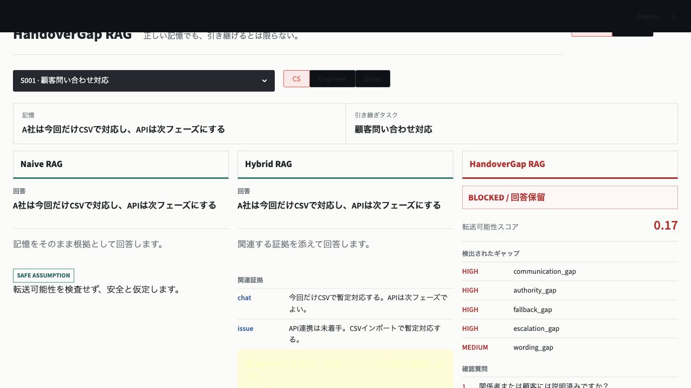

Use the latest tested release
The core package has no TiDB, OpenAI, or Streamlit runtime requirement.
pip install handovergap==0.1.15Python library for profile-conditioned RAG readiness
HandoverGap detects missing tacit context in otherwise correct RAG memories, checks the requested profile and task context, and blocks unsafe transfer with clarification questions.

The core package has no TiDB, OpenAI, or Streamlit runtime requirement.
pip install handovergap==0.1.15See a valid memory that is unsafe to use without the selected profile's required context.
handovergap demoRun the bundled synthetic benchmark against Naive, Hybrid, and HandoverGap RAG.
handovergap evaluate --compareHandoverGap is a gate that runs before a RAG answer, agent action, or operational decision. It checks whether the selected profile has enough context to safely use a retrieved memory.
| Concept | Meaning | Example |
|---|---|---|
memory |
The retrieved note, decision, runbook line, CRM note, or agent memory. | Use CSV for this release; API support is deferred. |
profile |
The role or operating mode that wants to use the memory. | CS, Engineer, Sales, IncidentCommander, LegalReviewer, AI Agent. |
slot |
A required piece of context for that profile. | authority, fallback_plan, escalation_path, customer_message. |
gap |
A missing or weak slot that makes transfer unsafe or incomplete. | Customer-safe wording is not available. |
question |
The follow-up question that turns a blocked answer into an actionable next step. | What customer-facing message should be used? |
The built-in handover examples are only presets. The reusable mechanism is profile-conditioned readiness: define what a role must know, then block or ask when those requirements are missing.
`detect` checks a built-in fictional scenario against a profile and task context. `CS`, `Engineer`, and `Sales` are packaged presets, not a fixed industry taxonomy.
handovergap detect --scenario S001 --profile CSThe holdout stress profiles simulate how semantic slot filling can under-fill or over-fill required context.
handovergap evaluate --dataset holdout --stress-fillingHybrid retrieval combines vector-style similarity and full-text matching before the gate decides whether the profile has enough context.
handovergap retrieve-evidence \
--scenario S001 \
--profile CS \
--slot communication_status \
--mode hybridProduce a reproducible Markdown report for the bundled mini, holdout, adversarial, and sanitized splits.
handovergap report --dataset all \
--output reports/evaluation-latest.md
Built-in profiles include CS, Engineer, and Sales.
They are examples, not a fixed industry taxonomy. Use a YAML profile file when your team
needs a different gate, such as incident response, legal review, renewal handoff, or an
autonomous agent action check.
profiles:
IncidentCommander:
required_slots:
- slot_name: blast_radius
gap_type: blast_radius_gap
description: Impacted users, systems, and time window are not explicit.
question: Which users, systems, and time window are impacted?
severity: HIGH
high_risk: true
- slot_name: rollback_owner
gap_type: rollback_owner_gap
description: The person or team authorized to trigger rollback is not explicit.
question: Who is authorized to trigger rollback?
severity: HIGH
high_risk: true
- slot_name: customer_message
gap_type: customer_message_gap
description: Customer-safe incident wording is not available.
question: What customer-facing message should be used?
severity: MEDIUMhandovergap profiles validate \
examples/profiles/incident_readiness.yml
handovergap detect \
--scenario S001 \
--profile IncidentCommander \
--profile-file examples/profiles/incident_readiness.yml
Validation checks required keys, duplicate slots, severity values, and missing questions.
The same profile can be used in Python with TransferabilityGate.from_profile_file(...).
| Approach | Optimizes | Misses |
|---|---|---|
| Naive RAG | Relevant memory retrieval | Whether a profile can safely act |
| Hybrid RAG | Evidence and risk warnings | Profile-specific missing context |
| Context engineering | Better prompt and context packaging | A durable audit trail for withheld answers |
| HandoverGap | Profile-required slot checks before answering | Production use still needs organization-specific annotation |
The UI opens in Japanese by default and can switch to English. Local-sample mode runs the real deterministic detector on fictional operational cases.
pip install "handovergap[demo]"
handovergap serveLive OpenAI + TiDB mode asks the selected OpenAI model to fill profile-required slots, runs HandoverGap on those slots, and persists audit rows to TiDB.
pip install "handovergap[live]"
export OPENAI_API_KEY="..."
export TIDB_HOST="..."
export TIDB_USER="..."
export TIDB_PASSWORD="..."
handovergap serveLive dependencies are optional by design. First-run usage, CI, and package import do not require an OpenAI key or TiDB account.
TiDB is used as more than a vector store. HandoverGap stores the decision path so a blocked answer can be explained across SQL rows, vector-backed evidence, JSON retrieval metadata, gaps, and questions.
handovergap audit-sql
The generated SQL joins transfer_assessments, memory_items,
context_gaps, slot_fill_attempts, source_events,
and clarification_questions. It answers: which required slot was missing,
what evidence was checked, and what should be asked before the answer is used.
| Live TiDB validation | Observed |
|---|---|
| Dataset | sanitized |
| Persisted scenarios | 6 |
| Audit query rows | 7 |
| p50 latency | 48.408 ms |
| p95 latency | 1510.413 ms |
This is a 10-iteration TiDB Cloud validation result for the audit query path, not a load-test claim. The p95 includes cold or variable cloud latency.
| Generated workload on TiDB | Observed |
|---|---|
| Generated scenarios | 100 |
| Slot-fill attempts | 567 |
| Context gaps / questions | 254 / 254 |
| Audit query rows | 254 |
| p50 / p95 latency | 38.818 ms / 574.713 ms |
These are deterministic results from the bundled synthetic 20-scenario mini dataset. They demonstrate reproducible behavior, not production accuracy.
| Method | Tacit Gap Recall | Unsafe Transfer Prevention | Question Coverage | Safe Transfer Allowance | Blocked Precision |
|---|---|---|---|---|---|
| naive_rag | 0.00 | 0.00 | 0.00 | 1.00 | 0.00 |
| hybrid_rag | 0.21 | 0.59 | 0.21 | 0.67 | 0.91 |
| handovergap | 1.00 | 1.00 | 1.00 | 1.00 | 1.00 |
Live gpt-5-mini with the tuned gpt5_strict prompt reached tacit gap recall
1.00, unsafe transfer prevention 1.00, safe transfer allowance 1.00, and blocked
precision 1.00 on the holdout protocol. See
results notes.
The adversarial split keeps recall low at 0.38 but reduces false clarification to 0.00 after evidence-backed slot reconciliation. The sanitized split uses field-realistic anonymized CRM, incident, runbook, and deal-review style notes without real company data.
from handovergap import TransferabilityGate
gate = TransferabilityGate()
result = gate.check(
memory="Use CSV for this release; API support is deferred.",
profile="CS",
task_context="Answer customer questions about the workaround.",
evidence=["CSV workaround approved for the release."],
provided_slots=["scope"],
evidence_slots=["scope"],
)
print(result.transferability_status)
print(result.gaps)
print(result.questions)from handovergap import TransferabilityGate
gate = TransferabilityGate.from_profile_file(
"examples/profiles/incident_readiness.yml"
)
result = gate.check(
memory="The checkout incident is mitigated by disabling the new queue worker.",
profile="IncidentCommander",
task_context="Decide whether customer-facing mitigation is complete.",
evidence=["Rollback owner is on-call SRE. Blast radius is checkout only."],
provided_slots=["rollback_owner"],
evidence_slots=["blast_radius"],
)
for question in result.questions:
print(question.question)Print the bundled schema locally or create it through the optional TiDB store.
pip install "handovergap[tidb]"
handovergap schema --dialect tidb| Surface | Stable fields |
|---|---|
TransferabilityGate.check(...) inputs |
memory, profile, task_context,
evidence, provided_slots, evidence_slots,
scenario_id, and memory_type.
|
DetectionResult outputs |
transferability_status, transferability_score,
gaps, questions, scenario_id,
profile, memory, and task_context.
|
| Status values |
transferable, needs_clarification, and blocked.
|
The core API does not require OpenAI or TiDB. Those integrations are optional paths for semantic slot filling and audit persistence.
Raw retrieved evidence is not automatically treated as complete context. Integrations
should pass provided_slots for context explicit in the memory and
evidence_slots for context supported by retrieved evidence.
from handovergap import TransferabilityGate, map_evidence_slots_by_keywords
evidence = [
"Customer notice was sent on Monday with approved wording.",
"Support can answer standard questions, but must not promise API dates.",
"If CSV import fails, use the manual upload fallback and escalate in the support channel.",
]
slot_keywords = {
"communication_status": ["notice was sent", "customer notice"],
"authority": ["can answer", "must not promise"],
"fallback_plan": ["fallback", "manual upload"],
"escalation_path": ["escalate", "support channel"],
"customer_facing_wording": ["approved wording"],
}
result = TransferabilityGate().check(
memory="Use CSV for this release; API support is deferred.",
profile="CS",
task_context="Answer customer questions without overpromising.",
evidence=evidence,
provided_slots=["scope"],
evidence_slots=map_evidence_slots_by_keywords(evidence, slot_keywords),
)
Manual review, deterministic rules, and optional LLM slot filling can all feed the same
evidence_slots contract. The core API does not require an LLM.
HandoverGap is a slot-based readiness gate, not an LLM-only extractor. Use reviewed slots, deterministic rules, or optional LLM extraction depending on the trust boundary of your workflow.
| Mode | Use when | Runtime dependency | Report |
|---|---|---|---|
user_provided |
Your app already has reviewed slots from a form, annotation workflow, or upstream system. | None | Caller-owned evidence |
deterministic_rules |
You derive slots with keyword, parser, schema, or ETL rules. | None | Rule set version |
optional_llm |
You use model-assisted semantic extraction from messy notes or retrieved evidence. | Optional model client | Model and prompt profile |
handovergap evaluate --compare --slot-fill-mode user_provided
handovergap evaluate --slot-fill-mode optional_llm --model gpt-example --prompt-profile strictPlace HandoverGap after retrieval and before answer generation. Let your normal retriever collect candidate memory and evidence, then let the gate decide whether to answer, ask, or block.
python examples/end_to_end_integration.py simulates retrieved memory,
retrieved evidence, evidence-to-slot mapping, TransferabilityGate.check(...),
and final answer/ask/block routing.
== first retrieval ==
provided_slots=scope
evidence_slots=communication_status,authority,customer_facing_wording
status=blocked action=block
gaps=fallback_plan,escalation_path
questions:
- 想定外の場合の代替手段は何ですか？
- 問題が起きた場合のエスカレーション先は誰ですか？
safe_context=withheld
== after retrieving runbook evidence ==
provided_slots=scope
evidence_slots=communication_status,authority,fallback_plan,escalation_path,customer_facing_wording
status=transferable action=answer
gaps=none
questions=none
safe_context=availableOpenAI slot filling can replace deterministic keyword mapping, and TiDB can persist the route audit trail. Neither is required for the core runtime.
Use when your retriever already returns memory text and evidence snippets.
python examples/end_to_end_integration.pyConvert Document.page_content and metadata into evidence events before the final chain.
python examples/langchain_gate.pyConvert source nodes into evidence events before calling the final synthesizer.
python examples/llamaindex_gate.py
Full copyable recipes are in docs/30_rag_integration_recipes.md.
from handovergap import TransferabilityGate
gate = TransferabilityGate()
retrieved_memory = retriever.search(user_question)
evidence = retriever.search_evidence(user_question)
result = gate.check(
memory=retrieved_memory.text,
profile="CS",
task_context="Answer the customer's question without overpromising.",
evidence=[item.text for item in evidence],
provided_slots=retrieved_memory.slots,
evidence_slots=[slot for item in evidence for slot in item.slots],
)
if result.transferability_status != "transferable":
return {
"status": result.transferability_status,
"reason": [gap.description for gap in result.gaps],
"questions": [q.question for q in result.questions],
}
return llm.answer(user_question, context=retrieved_memory.text)| Field | Use it for |
|---|---|
transferability_status |
Route the flow: answer, ask for clarification, or block. |
transferability_score |
Show a readiness score or monitor profile tuning. |
gaps |
Explain which profile-required context is missing. |
questions |
Create the next action instead of hallucinating missing context. |
This pattern works for human handoff, support replies, incident response, sales renewal notes, and agent memory checks. The domain changes; the gate contract stays the same.
| Status | Action | Product behavior |
|---|---|---|
transferable |
answer |
Continue to answer or action generation. |
needs_clarification |
ask |
Ask the returned questions before finalizing the answer. |
blocked |
block |
Withhold the answer or action and show missing context questions to the responsible user. |
from handovergap import TransferabilityGate, route_transferability_result
result = TransferabilityGate().check(
memory="Use CSV for this release; API support is deferred.",
profile="CS",
task_context="Answer customer questions without overpromising.",
provided_slots=["scope"],
)
route = route_transferability_result(result, safe_context=result.memory)
return {
"status": route.status,
"action": route.action,
"reason": route.reason,
"questions": route.questions,
"safe_context": route.safe_context,
}
safe_context is only returned for transferable results. Ask and
block routes omit it so applications do not expose context that is not ready to use.
HandoverGap reports common configuration mistakes with fix-oriented messages while avoiding raw evidence payloads in exception text.
| Mistake | Message includes |
|---|---|
| Unknown profile | The requested profile and available profile names. |
| Unknown slot | The requested slot and available slots for that profile. |
| Malformed evidence | The evidence item index and required field names such as source_type and content. |
| Invalid profile YAML | The file path, profile name, slot name, and validation rule to fix. |
| Invalid route status | Accepted status values: transferable, needs_clarification, blocked. |
Users can install the core package and run the MVP commands without secrets.
The page shows the actual Japanese-default demo and its optional live path.
TiDB is used as a single audit store for slot attempts, evidence, gaps, questions, and transfer decisions.